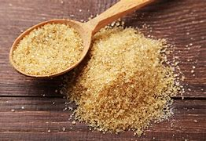

Ingredient Spotlight: Brown Sugar

Overview
Description: Brown sugar is sugar that contains molasses, giving it a rich flavor and moist texture. It's commonly used in baking and cooking.
Origin: Brown sugar originated in Asia and has been used for centuries in various culinary traditions.
Nutritional Information
| Nutrient |
Amount per 100g |
| Calories |
380 |
| Carbohydrates |
98g |
| Fat |
0g |
| Protein |
0g |
Health Benefits:
- Contains trace minerals like calcium, potassium, and iron.
- May provide a richer flavor in recipes compared to white sugar.
Culinary Uses
Flavor Profile: Brown sugar has a warm, caramel-like flavor, enhancing both sweet and savory dishes.
Cooking Methods: It can be used in baking, sauces, and marinades.
Common Dishes:
- Chocolate chip cookies
- Barbecue sauce
- Brown sugar glazed ham
Storage and Preparation Tips
Storage Guidelines: Keep brown sugar in an airtight container to prevent it from hardening.
Preparation Tips: If hardened, soften it by microwaving with a damp paper towel.
Varieties and Substitutes
Types:
- Light brown sugar
- Dark brown sugar
Substitutes:
White sugar with molasses can be used as a substitute.
Fun Facts and Trivia
- Brown sugar can clump due to moisture absorption.
- It is often used in savory dishes to balance flavors.
FAQs
Q: Is brown sugar healthier than white sugar?
A: While it contains some minerals, both are similar in calories and should be used in moderation.
Q: Can I substitute brown sugar for white sugar in recipes?
A: Yes, but it may change the flavor and moisture content.